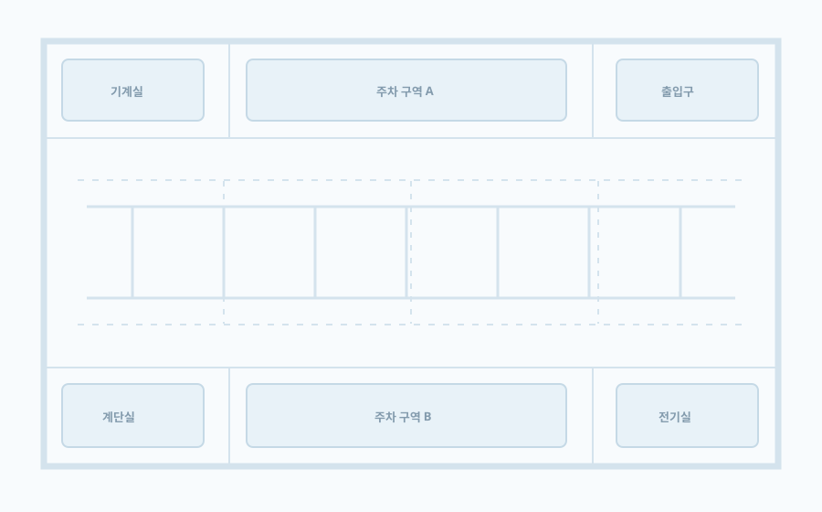

<!doctype html>
<html lang="ko">
<head>
  <meta charset="utf-8">
  <meta name="viewport" content="width=device-width, initial-scale=1">
  <title>킨다 관제 UX 개선 시안</title>
  <link rel="stylesheet" href="./scenes.css">
  <link rel="stylesheet" href="./scenes-overrides.css">
</head>
<body>
<div id="root"></div>
<script>
const logo = '';
const svg = {
  monitoring:'<circle cx="12" cy="12" r="8"/><path d="M4 12h4l2-4 3 8 2-4h5"/>',
  control:'<path d="M4 6h16M4 12h16M4 18h16"/><circle cx="9" cy="6" r="2" fill="white"/><circle cx="15" cy="12" r="2" fill="white"/><circle cx="8" cy="18" r="2" fill="white"/>',
  stats:'<path d="M4 20V9m5 11V4m5 16v-7m5 7V7"/>',
  settings:'<circle cx="12" cy="12" r="3"/><path d="M12 2v3m0 14v3M2 12h3m14 0h3M4.9 4.9l2.1 2.1m10 10 2.1 2.1m0-14-2.1 2.1m-10 10-2.1 2.1"/>'
};
function icon(name){return '<svg class="nav-icon" viewBox="0 0 24 24" aria-hidden="true">'+svg[name]+'</svg>'}
function nav(active){return '<nav class="rail-nav">'+[['monitoring','모니터링'],['control','제어'],['stats','통계'],['settings','설정']].map(x=>'<div class="nav-item '+(x[0]===active?'active':'')+'">'+icon(x[0])+'<span>'+x[1]+'</span></div>').join('')+'</nav>'}
function topbar(title){return '<header class="topbar"><div class="top-left"><div class="brandword">킨다</div><div class="top-divider"></div><strong>'+title+'</strong></div><div class="top-right"><div class="site-pill">◈ &nbsp; 센트럴파크 주차장 &nbsp;⌄</div>'+(title==='통계'?'<div class="site-pill">추이 · 9/1–9/23 &nbsp;⌄ <span class="proposal">제안</span></div>':'')+'<span class="status-pill warn"><span class="dot"></span>게이트웨이 1/2대 연결 · 확인 필요</span><span class="top-note">마지막 확인 14:32</span><div class="top-icon" aria-label="상태 센터 열기">☷<span class="red-dot"></span></div></div></header>'}
function shell(active,title,content){return '<div class="screen"><div class="app"><aside class="rail"><div class="logo-wrap">'+logo+'</div>'+nav(active)+'<div class="rail-bottom">관제 센터<br>운영 계정</div></aside><div class="app-main">'+topbar(title)+'<main class="content">'+content+'</main></div></div><div class="source-note">디자인 제안 · 화면의 현장명·수치·일시는 가상 예시</div></div>'}
function pageHead(kicker,title,sub,action){return '<div class="page-head"><div><div class="eyebrow">'+kicker+'</div><h1 class="page-title">'+title+'</h1>'+(sub?'<p class="sub">'+sub+'</p>':'')+'</div>'+(action||'')+'</div>'}
function marker(x,y,status,selected,index){return '<button type="button" aria-label="B2-A-'+String(index+1).padStart(3,'0')+' · '+(status==='fault'?'점검 필요':status==='off'?'오프라인':'정상')+'" class="marker '+(status||'')+' '+(selected?'selected':'')+'" style="left:'+x+'%;top:'+y+'%"></button>'}
function mapMarkers(control){return [[20,44,''],[31,44,''],[42,44,''],[53,44,''],[64,44,''],[75,44,''],[20,58,''],[31,58,''],[42,58,''],[53,58,''],[64,58,''],[75,58,''],[36,50,'fault'],[60,50,'off']].map((m,i)=>marker(m[0],m[1],m[2],control?[3,4,5].includes(i):i===12,i)).join('')}
function mapCard(control){return '<section class="card map-card"><div class="map-head"><div class="hstack"><h2 class="card-title">B2 주차장</h2><span class="pill blue">층 선택 ⌄</span></div><span class="small">'+(control?'선택 3개 · 제어 가능 3개':'지도에 배치된 조명 14개')+'</span></div>'+(control?'<div class="control-map-toolbar"><div class="segment"><span class="active">지도</span><span>목록</span><span>구역</span></div><span class="small">지도를 탭해 대상을 선택</span></div>':'')+'<div class="map-stage">'+mapMarkers(control)+'<div class="map-tools"><span>−</span><span>100%</span><span>＋</span><span>□</span></div></div><div class="map-legend"><span><i class="legend-dot"></i>정상</span><span><i class="legend-dot fault"></i>점검 필요</span><span><i class="legend-dot off"></i>오프라인</span><span>○ 선택</span></div></section>'}
function metric(label,value,helper,tone){return '<div class="card metric '+(tone||'')+'"><div class="small">'+label+'</div><div class="value">'+value+'</div><small>'+helper+'</small></div>'}
function monitoring(){return shell('monitoring','모니터링',pageHead('현장 운영 / 모니터링','조명 현황','B2층 · 마지막 장비 상태 확인 14:32','<div class="hstack"><button class="outline">↻ &nbsp; 새로고침</button><button class="primary">점검 대상 보기 · 1</button></div>')+
  '<div class="stat-row">'+metric('전체 조명','48','선택 층 기준')+metric('정상','44','최근 수신 정상')+metric('점검 필요','1','Health fault','danger')+metric('오프라인','3','상태 확인 필요')+'</div>'+
  '<div class="two-col">'+mapCard(false)+'<aside class="card detail"><div class="mini-heading"><h2 class="card-title">선택 조명</h2><span class="pill danger">● 점검 필요</span></div><div><div class="eyebrow">B2 · 주차 구역 A</div><h3 style="font-size:20px;margin:5px 0 0">B2-A-013</h3></div><div class="big-blue"><span>최근 확인 밝기</span><b>70%</b><div style="height:6px;background:#ffffff5c;border-radius:10px"><div style="width:70%;height:6px;background:#fff;border-radius:10px"></div></div></div><div class="detail-row"><span>상태 원인</span><strong>장비 Health fault</strong></div><div class="detail-row"><span>게이트웨이</span><strong>GW-B2-01 · 연결</strong></div><div class="detail-row"><span>마지막 수신</span><strong>14:31</strong></div><div class="detail-row"><span>권장 조치</span><strong>장비 상태 확인</strong></div><div class="actionline" style="margin-top:auto"><button class="outline">상세 정보</button><button class="primary">제어로 이동</button></div><div class="search">⌕ &nbsp; 조명 이름·번호 검색 <span class="proposal">제안</span></div></aside></div>')}
function control(){return shell('control','제어',pageHead('현장 운영 / 제어','조명 밝기 제어','B2층 · 대상 선택 후 밝기를 적용합니다.','<button class="outline">구역 관리</button>')+
  '<div class="tabs"><div class="tab active">수동 제어</div><div class="tab">스케줄</div><div class="tab">차량 이벤트</div></div>'+
  '<div class="control-grid">'+mapCard(true)+'<aside class="card control-panel"><div><div class="eyebrow">01 / 선택한 대상</div><h2 class="card-title" style="margin-top:5px">B2 주차 구역 A</h2><p class="sub">조명 3개 선택 · 제어 가능 3개</p></div><div class="search">⌕ &nbsp; 조명 이름·번호로 찾기</div><div style="border-top:1px solid var(--border);padding-top:15px"><div class="eyebrow">02 / 밝기 실행</div><div class="actionline" style="margin-top:9px"><h3 style="margin:0;font-size:18px">밝기</h3><strong style="font-size:28px">70%</strong></div><div class="range"></div><div class="preset-row"><span class="preset">0%</span><span class="preset">30%</span><span class="preset active">70%</span><span class="preset">100%</span></div></div><div class="info-card"><strong>전송 방식</strong><br>BLE Mesh 다중 대상 전송 · 현재 선택 기준</div><button class="primary" style="height:50px;margin-top:auto">3개 조명에 밝기 적용</button><div class="tiny" style="text-align:center">적용 결과는 이 패널에서 확인합니다.</div></aside></div>'+
  '<section class="card history"><div class="actionline"><h2 class="card-title">최근 제어 이력</h2><button class="ghost">이력 더 보기 →</button></div><div class="hist-row"><span><b>14:20</b> &nbsp; B2-A-008 외 2개 · 70%</span><span class="pill success">● 적용 확인</span><span>운영 계정</span></div></section>')}
function setup(){return '<div class="screen"><div class="setup-shell"><aside class="setup-aside"><div class="logo-box">'+logo+'</div><h1>설치부터 운영까지,<br>하나로 연결합니다.</h1><p>현장과 층을 등록한 뒤 게이트웨이와 조명을 연결합니다. 필요한 정보만 순서대로 입력하세요.</p><div style="margin-top:44px"><div class="setup-step active"><span class="step-num">1</span><b>현장 정보</b></div><div class="setup-step"><span class="step-num">2</span>게이트웨이 연결</div><div class="setup-step"><span class="step-num">3</span>조명 등록</div><div class="setup-step"><span class="step-num">4</span>운영 시작</div></div><div style="margin-top:auto;color:#d3e1e9;font-size:11px">조명 운영을 간단하게. &nbsp; 킨다</div></aside><main class="setup-main"><div class="eyebrow">처음 설치 / 1단계</div><h2>현장과 층을 설정하세요</h2><p class="sub">층은 자동 생성 후 이름을 수정할 수 있습니다.</p><div class="setup-grid" style="margin-top:27px"><section class="card setup-card"><h3 class="card-title">현장 정보</h3><p>운영 화면과 보고서에서 사용할 기본 정보입니다.</p><div class="label">현장명</div><div class="field">센트럴파크 주차장</div><div class="label" style="margin-top:18px">주소</div><div class="field faint">서울특별시 강남구 예시로 12</div><div class="label" style="margin-top:18px">시간대</div><div class="field">Asia/Seoul <span>⌄</span></div></section><section class="card setup-card"><h3 class="card-title">층 생성</h3><p>지하·지상 층수를 입력하면 이름과 층 번호를 만듭니다.</p><div class="row"><div><div class="label">지하 층수</div><div class="field">2</div></div><div><div class="label">지상 층수</div><div class="field">1</div></div></div><button class="outline" style="margin-top:15px">층 자동 생성</button><div class="floor-list"><div class="floor-chip">B2 <span style="float:right;color:var(--blue)">수정</span></div><div class="floor-chip">B1 <span style="float:right;color:var(--blue)">수정</span></div><div class="floor-chip">1F <span style="float:right;color:var(--blue)">수정</span></div></div></section></div><div class="info-card" style="margin-top:18px">다음 단계에서 게이트웨이를 연결합니다. 현장과 층 이름은 설치 후에도 설정에서 관리할 수 있습니다.</div><div class="setup-footer"><button class="primary">현장 저장하고 계속 →</button></div></main></div><div class="source-note">디자인 제안 · 입력값은 가상 예시</div></div>'}
function statsTabs(active){return '<div class="tabs"><div class="tab '+(active==='overview'?'active':'')+'">개요</div><div class="tab '+(active==='analysis'?'active':'')+'">분석</div><div class="tab '+(active==='reports'?'active':'')+'">보고서</div></div>'}
function statistics(){return shell('stats','통계',statsTabs('overview')+pageHead('현장 운영 / 통계','에너지 리포트','Asia/Seoul · 마지막 집계 14:30','<span class="pill blue">상태 기반 추정</span>')+
  '<div class="stat-row" style="grid-template-columns:repeat(3,1fr)">'+metric('오늘','126.4 kWh','수집 완료')+metric('이번 달','3,824.6 kWh','수집 공백 있음')+metric('올해','38,760.2 kWh','수집 완료')+'</div>'+
  '<div class="overview-grid"><section class="card overview-card"><div class="actionline"><h2 class="card-title">사용량 추이</h2><div class="segment"><span class="active">일별</span><span>월별</span></div></div><div class="chart"><svg viewBox="0 0 650 255" preserveAspectRatio="none"><polyline fill="none" stroke="#256fa1" stroke-width="3" points="0,196 50,170 100,184 150,112 200,140 250,118 300,154 350,92 400,126 450,72 500,91 550,48 600,71 650,31"/><circle cx="550" cy="48" r="5" fill="#256fa1" stroke="white" stroke-width="3"/></svg></div><div class="chart-labels"><span>9/1</span><span>9/5</span><span>9/10</span><span>9/15</span><span>9/20</span><span>9/23</span></div><div class="small" style="margin-top:16px">데이터가 없는 날짜는 선을 연결하지 않고 공백으로 표시합니다.</div></section><section class="card overview-card"><div class="actionline"><h2 class="card-title">비용 비교</h2><span class="pill warn">수집 공백</span></div><div class="overview-rows"><div><span>이번 달 예상 비용</span><strong>412,000원</strong></div><div><span>24시간 100% 기준</span><strong>610,000원</strong></div><div><span>예상 차이</span><strong>198,000원</strong></div></div><p class="small" style="line-height:1.7;margin-top:17px">상태 기반 추정치입니다. 실제 전력 계측 및 청구 금액과 다를 수 있습니다.</p><button class="outline" style="margin-top:7px">보고서에서 내보내기 →</button></section></div>')}
function reports(){return shell('stats','통계',statsTabs('reports')+pageHead('현장 운영 / 통계 / 보고서','보고서','선택한 기간과 범위로 생성한 보고서를 관리합니다.','<button class="primary">＋ &nbsp; 보고서 만들기</button>')+
  '<div class="report-filters"><div><div class="label">검색</div><div class="field faint">⌕ &nbsp; 대상명·범위 검색</div></div><div><div class="label">상태</div><div class="field">전체 상태 ⌄</div></div><div><div class="label">요청 기간</div><div class="field">2026.09.01 — 09.23 ▦</div></div><div style="align-self:end"><button class="outline">상세 필터 · 형식/범위 ⌄ <span class="proposal">제안</span></button></div></div>'+
  '<div class="actionline"><div class="hstack"><span class="pill blue">요청 기간: 9/1–9/23 ×</span><span class="small">결과 4건</span></div><span class="small">비용은 보고서 생성 당시 적용 단가 기준 &nbsp;ⓘ</span></div>'+
  '<section class="card report-table"><div class="table-head"><span>보고서</span><span>범위</span><span>형식</span><span>상태</span><span>요청일</span><span>동작</span></div>'+
  '<div class="table-row"><span><strong>9월 월간 에너지</strong><span class="small">2026.09.01 – 09.23</span></span><span>현장 전체</span><span>PDF</span><span class="pill success">● 완료</span><span>9/23 14:22</span><button class="ghost">다운로드</button></div>'+
  '<div class="table-row"><span><strong>B2층 일별 사용량</strong><span class="small">2026.09.01 – 09.23</span></span><span>B2층</span><span>XLSX</span><span class="pill success">● 완료</span><span>9/23 13:04</span><button class="ghost">다운로드</button></div>'+
  '<div class="table-row"><span><strong>주차 구역 A 비교</strong><span class="small">2026.09.01 – 09.23</span></span><span>그룹</span><span>PDF</span><span class="pill warn">◷ 생성 중</span><span>9/23 12:10</span><span class="small">처리 중</span></div>'+
  '<div class="table-row"><span><strong>B1층 주간 보고서</strong><span class="small">2026.09.15 – 09.21</span></span><span>B1층</span><span>PDF</span><span class="pill danger">! 생성 실패</span><span>9/22 09:02</span><button class="ghost">다시 생성</button></div>'+
  '<div class="pagination"><span>페이지당 20건 ⌄</span><span>1 / 1 &nbsp;&nbsp; 〈 &nbsp; 〉</span></div></section>')}
function settings(){return shell('settings','설정',pageHead('현장 운영 / 설정','현장 설정','설치 정보, 도면, 계정과 운영 기준을 관리합니다.','')+
 '<div class="tabs"><div class="tab active">개요</div><div class="tab">조명 등록</div><div class="tab">층·도면</div><div class="tab">운영 기준</div><div class="tab">사용자</div><div class="tab">계정 보안</div></div>'+
 '<div class="settings-grid"><section class="card settings-card"><div class="actionline"><h2 class="card-title">현장 정보</h2><button class="ghost">관리 →</button></div><p>운영 대상과 현장별 기준을 확인합니다.</p><div class="counts"><div><strong>1</strong><span>현장</span></div><div><strong>3</strong><span>층</span></div><div><strong>48</strong><span>등록 조명</span></div></div></section><section class="card settings-card"><div class="actionline"><h2 class="card-title">게이트웨이·조명 등록</h2><button class="ghost">등록 화면 →</button></div><p>연결, 조명 검색, 세션 복구를 이어서 수행합니다.</p><div class="counts"><div><strong>2</strong><span>게이트웨이</span></div><div><strong>1</strong><span>연결 확인 필요</span></div></div></section><section class="card settings-card"><div class="actionline"><h2 class="card-title">층·도면</h2><button class="ghost">도면 관리 →</button></div><p>층별 도면과 조명 위치를 편집합니다.</p><div class="counts"><div><strong>3</strong><span>등록된 층</span></div><div><strong>2</strong><span>저장된 도면</span></div></div></section><section class="card settings-card"><div class="actionline"><h2 class="card-title">계정·보안</h2><button class="ghost">관리 →</button></div><p>사용자, 비밀번호, MFA와 활성 세션을 확인합니다.</p><div class="counts"><div><strong>4</strong><span>사용자</span></div><div><strong>2</strong><span>활성 세션</span></div></div></section></div>'+
 '<div class="info-card">현장 전환은 상단 현장 선택기에서 수행합니다. 도면 편집 중 저장하지 않은 변경은 이동 전에 확인합니다.</div>')}
function mobile(){return '<div class="screen mobile"><header class="mobile-head"><div class="hstack">'+logo+'<div><strong>킨다</strong><div class="tiny">센트럴파크 주차장 ⌄ · B2 <span class="proposal">현장 선택 제안</span></div></div></div><div class="top-icon">☷<span class="red-dot"></span></div></header><main class="mobile-content"><div class="actionline"><div><div class="eyebrow">현장 운영</div><h1 class="page-title">조명 현황</h1></div><button class="outline" style="height:36px;padding:0 10px;font-size:11px">↻ 새로고침</button></div><div class="stat-row">'+metric('전체','48','')+metric('정상','44','')+metric('점검','1','','danger')+metric('오프라인','3','')+'</div><div class="actionline"><span class="pill blue">B2층 ⌄</span><div class="hstack"><span class="pill warn">상태 확인 필요 1</span><span class="proposal">제안</span></div></div>'+mapCard(false)+'<section class="card detail"><div class="actionline"><h2 class="card-title">우선 확인</h2><button class="ghost" style="height:26px">전체 보기 →</button></div><div class="actionline"><span><strong>B2-A-013</strong><br><span class="small">장비 Health fault · 마지막 수신 14:31</span></span><span class="pill danger">점검</span></div></section><div class="search">⌕ &nbsp; 조명 이름·번호 검색 <span class="proposal">제안</span></div></main><nav class="mobile-nav">'+[['monitoring','모니터링'],['control','제어'],['stats','통계'],['settings','설정']].map(x=>'<div class="nav-item '+(x[0]==='monitoring'?'active':'')+'">'+icon(x[0])+'<span>'+x[1]+'</span></div>').join('')+'</nav><div class="source-note">가상 수치·현장명</div></div>'}
function mobileEditor(){return '<div class="screen mobile"><header class="mobile-head"><div class="hstack">'+logo+'<div><strong>층·도면</strong><div class="tiny">센트럴파크 주차장 · B2</div></div></div><button class="outline" style="height:35px;padding:0 10px;font-size:11px">저장</button></header><main class="mobile-content"><div class="actionline"><div><div class="eyebrow">설정 / 지도 편집</div><h1 class="page-title">조명 배치</h1></div><span class="pill blue">편집 가능</span></div><div class="search">⌕ &nbsp; 미배치 조명 찾기</div><div class="card" style="padding:12px"><div class="actionline"><div><b>B2-A-049</b><div class="small">미배치 · 18 W</div></div><button class="primary" style="height:37px;padding:0 11px">지도에 놓기</button></div></div><div class="card map-card" style="height:338px;flex:none"><div class="map-head"><h2 class="card-title">B2층 도면</h2><span class="small">탭할 위치 선택 <span class="proposal">제안</span></span></div><div class="map-stage">'+mapMarkers(false)+'<span class="placement-target" style="left:51%;top:51%"></span></div><div class="map-legend">① 조명 선택 &nbsp; ② 지도 탭 &nbsp; ③ 위치 확인·저장</div></div><div class="info-card">B2-A-049를 이 위치에 배치할까요? 위치는 저장 전까지 변경할 수 있습니다.</div><div class="actionline"><button class="outline">취소</button><button class="primary">이 위치에 배치</button></div></main><nav class="mobile-nav">'+[['monitoring','모니터링'],['control','제어'],['stats','통계'],['settings','설정']].map(x=>'<div class="nav-item '+(x[0]==='settings'?'active':'')+'">'+icon(x[0])+'<span>'+x[1]+'</span></div>').join('')+'</nav><div class="source-note">모바일 탭 배치 · 제안 기능</div></div>'}
function setupCorrected(){
  return setup()
    .replace('<div class="label">현장명</div><div class="field">센트럴파크 주차장</div>', '<div class="label">고객사</div><div class="field" style="background:var(--inset)">킨다 파트너 · 읽기 전용</div><div class="label" style="margin-top:13px">현장</div><div class="field" style="background:var(--inset)">센트럴파크 주차장 · 읽기 전용</div>')
    .replace('<div class="label" style="margin-top:18px">시간대</div>', '<div class="label" style="margin-top:13px">kWh 단가</div><div class="field">132 원/kWh</div><div class="label" style="margin-top:13px">시간대</div>')
    .replace('현장 저장하고 계속 →', '초기 설정 완료 · 게이트웨이 연결 → <span class="proposal">제안</span>')
    .replace(/<div class="info-card" style="margin-top:18px">.*?<\/div>/, '')
    .replace('<button class="outline" style="margin-top:15px">층 자동 생성</button>', '<button class="outline" style="margin-top:15px">층 자동 생성</button><button class="ghost" title="층수와 생성된 층 목록이 일치하지 않으면 저장하지 않습니다.">층수 변경 시 확인 ⓘ <span class="proposal">제안</span></button>');
}
function controlCorrected(){
  return control().replace(/<div class="info-card"><strong>전송 방식<\/strong><br>.*?<\/div>/, '<div class="actionline" style="border-top:1px solid var(--border);padding-top:12px"><span class="small">최근 결과</span><span class="pill success">● 적용 확인</span></div>');
}
function statisticsCorrected(){
  return statistics()
    .replace('마지막 집계 14:30', '마지막 집계 14:30 · 상태 기반 추정')
    .replace('수집 완료', '오늘 00:00–14:30 · 진행 중')
    .replace('수집 공백 있음', '일부 수집 공백 · 추정')
    .replace('24시간 100% 기준', '비교 기준 · 24시간 100%')
    .replace('예상 차이', '기준 대비 예상 차이')
    .replace('<div class="chart"><svg', '<div class="chart"><div class="chart-y-axis"><span>kWh</span><span>160</span><span>120</span><span>80</span><span>40</span><span>0</span></div><svg')
    .replace(/<polyline fill="none" stroke="#256fa1" stroke-width="3" points="[^"]+"\/>/, '<polyline fill="none" stroke="#256fa1" stroke-width="3" points="0,196 50,170 100,184 150,112 200,140 250,118"/><polyline fill="none" stroke="#256fa1" stroke-width="3" points="350,92 400,126 450,72 500,91 550,48 600,71 650,31"/>');
}
function reportsCorrected(){
  return reports()
    .replace('<div class="site-pill">추이 · 9/1–9/23 &nbsp;⌄ <span class="proposal">제안</span></div>', '')
    .replaceAll('2026.09.01 – 09.23', '2026.09.01 – 09.22')
    .replace('2026.09.01 – 09.22</span></span><span>현장 전체', '2026.09.01 – 09.22<br>파일 만료 9/30 14:22</span></span><span>현장 전체')
    .replace('2026.09.01 – 09.22</span></span><span>B2층', '2026.09.01 – 09.22<br>파일 만료 9/30 13:04</span></span><span>B2층')
    .replace('비용은 보고서 생성 당시 적용 단가 기준', '저장 비용: 당시 단가 · 비교 기준: 생성 시 단가');
}
function mobileCorrected(){
  return mobile()
    .replace('지도에 배치된 조명 14개', '배치 조명 14개 · 일부 표시')
    .replace('<div class="tiny">센트럴파크 주차장 ⌄ · B2 <span class="proposal">현장 선택 제안</span></div>', '<button type="button" class="site-switch-mobile">센트럴파크 주차장 ⌄ · B2</button>');
}
function mobileEditorCorrected(){
  return mobileEditor().replace('style="height:338px;flex:none"', 'style="height:288px;flex:none"');
}
function settingsCorrected(){
  return settings().replace(/<div class="info-card">현장 전환은.*?<\/div>/, '');
}
function statusCenter(){
  return monitoring().replace('<div class="source-note">', '<div class="toast" role="status"><strong>일부 상태를 새로고침하지 못했습니다.</strong><p>마지막 확인값 유지 · 상태 센터에서 다시 확인</p></div><aside class="status-popover"><div class="actionline"><h2 class="card-title">상태 센터</h2><span class="proposal">제안</span></div><p class="small">현재 화면의 상태를 다시 확인할 수 있습니다.</p><div class="status-entry"><span class="pill warn">갱신 지연</span><strong>조명 상태 갱신 실패</strong><p>마지막 확인값 14:32를 표시 중입니다.</p><button class="ghost">상태 다시 확인 →</button></div><div class="status-entry"><span class="pill danger">점검 필요</span><strong>B2-A-013 · 장비 Health fault</strong><p>상세 원인과 권장 조치를 확인하세요.</p><button class="ghost">조명 상세 열기 →</button></div></aside><div class="source-note">');
}
function auth(){
  return '<div class="screen"><div class="setup-shell"><aside class="setup-aside" style="width:560px"><div class="logo-box">'+logo+'</div><h1 style="margin-top:150px;font-size:38px">조명 운영을<br>간단하게.</h1><p>설치 정보, 상태 확인, 제어와 운영 통계를<br>한곳에서 확인하세요.</p><div style="margin-top:auto;color:#c9d9e2;font-size:12px">킨다 관제 · 스마트 조명 운영 솔루션</div></aside><main style="flex:1;display:grid;place-items:center"><section class="card" style="width:420px;padding:32px"><div class="eyebrow">킨다 관제</div><h1 style="font-size:27px;margin:7px 0 8px">다시 연결해 주세요</h1><p class="sub" style="line-height:1.6">서비스 응답이 지연되어 로그인 상태를 확인하지 못했습니다. 비밀번호 오류로 판단하지 않습니다.</p><div class="info-card" style="margin-top:23px;border-color:var(--border);background:var(--paper)"><strong>연결 상태 확인 필요</strong><br>입력한 비밀번호는 유지하지 않습니다. 다시 연결한 뒤 로그인해 주세요.</div><button class="primary" style="width:100%;margin-top:22px;height:48px">상태 다시 확인</button><button class="ghost" style="width:100%;margin-top:8px">로그인 화면으로 돌아가기</button><p class="small" style="text-align:center;margin-top:21px">계속 실패하면 현장 관리자에게 문의하세요.</p><div class="proposal" style="display:inline-flex;margin-top:6px">P0 복구 흐름 제안</div></section></main></div><div class="source-note">디자인 제안 · 가상 오류 상태</div></div>';
}
function authCorrected(){
  return auth().replace(/<div class="info-card" style="margin-top:23px;.*?<\/div>/, '<p class="small" style="margin-top:18px">비밀번호 입력값은 다시 입력해야 합니다.</p>');
}
const scenes = {setup:setupCorrected,monitoring,control:controlCorrected,statistics:statisticsCorrected,reports:reportsCorrected,settings:settingsCorrected,mobile:mobileCorrected,mobileEditor:mobileEditorCorrected,statusCenter,auth:authCorrected};
const selected = new URLSearchParams(location.search).get('scene') || 'monitoring';
document.getElementById('root').innerHTML = (scenes[selected] || monitoring)()
  .replace(/<span class="proposal">.*?<\/span>/g, '')
  .replace(/<div class="proposal"[^>]*>.*?<\/div>/g, '')
  .replace('가상 수치·현장명</div>', '디자인 제안 · 가상 수치·현장명</div>')
  .replace('모바일 탭 배치 · 제안 기능</div>', '디자인 제안 · 모바일 탭 배치 · 가상 예시</div>')
  .replaceAll('장비 Health fault', '조명 자체 점검 신호')
  .replaceAll('Health fault', '조명 자체 점검 신호')
  .replaceAll('장비 상태 확인', '조명·배선 상태 확인')
  .replaceAll('<div class="map-tools"><span>−</span><span>100%</span><span>＋</span><span>□</span></div>', '<div class="map-tools"><button type="button" aria-label="축소">−</button><button type="button" aria-label="현재 배율">100%</button><button type="button" aria-label="확대">＋</button><button type="button" aria-label="화면 맞춤">□</button></div>');
</script>
</body>
</html>
